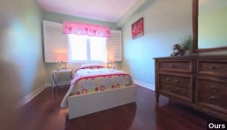
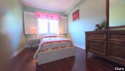

ReconFusion: 3D Reconstruction with Diffusion Priors
Abstract
3D reconstruction methods such as Neural Radiance Fields (NeRFs) excel at rendering photorealistic novel views of complex scenes. However, recovering a high-quality NeRF typically requires tens to hundreds of input images, resulting in a time-consuming capture process. We present ReconFusion to reconstruct real-world scenes using only a few photos. Our approach leverages a diffusion prior for novel view synthesis, trained on synthetic and multiview datasets, which regularizes a NeRF-based 3D reconstruction pipeline at novel camera poses beyond those captured by the set of input images. Our method synthesizes realistic geometry and texture in underconstrained regions while preserving the appearance of observed regions. We perform an extensive evaluation across various real-world datasets, including forward-facing and 360-degree scenes, demonstrating significant performance improvements over previous few-view NeRF reconstruction approaches.
ReconFusion
(a) We optimize a NeRF to minimize a reconstruction loss \(\mathcal{L}_\mathrm{recon}\) between renderings and a few input images, as well as a sample loss \(\mathcal{L}_\mathrm{sample}\) between a rendering from a random pose and an image predicted by a diffusion model for that pose. (b) To generate the sample image, we use a PixelNeRF-style model to fuse information from the input images and to render a predicted feature map corresponding to the sample view camera pose. (c) This feature map is concatenated with the noisy latent (computed from the current NeRF rendering at that pose) and is provided to a diffusion model, which additionally uses CLIP embeddings of the input images via cross-attention. The resulting decoded output sample is used to enforce an image-space loss on the corresponding NeRF rendering (\(\mathcal{L}_\mathrm{sample}\)).
Comparisons


 



Baseline method (left) vs our ReconFusion (right).
Samples from diffusion model
Compare ablations of our method. TBA.
Different amount of sparsity
Hover over the plot to show rendered video under different number of views.
Our learned diffusion prior improves performance over the Zip-NeRF baseline up to as many as 81 input views on the kitchenlego scene from the mip-NeRF 360 dataset.
Citation
Acknowledgements
Thanks to
The website template was borrowed from Michaël Gharbi and Ref-NeRF.